World-Action Models
本文记录若干 WAM 论文（2023.12~2026.05）。
Introduction
WAM (World-Action Model) 指同时预测动作和未来观测的模型，一般基于预训练视频生成模型构建。WAM 接收历史观测 \(o_{0:t}\)、当前机器人状态 \(q_t\) 和文本指令 \(c\) 作为输入，输出机器人一个 chunk 的动作 \(a_{t+1:t+k}\)，同时预测该 chunk 内的观测视频 \(o_{t+1:t+k}\). \[ \max_{\theta}~\mathbb E_{(a_{t+1:t+k},o_{0:t+1},q_t,c)\sim\mathcal D}\left[\log \pi_\theta(a_{t+1:t+k},o_{t+1:t+k}\vert o_{0:t},q_t,c)\right] \]
动作和未来观测的联合分布可以进行多种分解：
- 分解 1 (IDM + Video Gen)：\(\pi_\theta(a,o'\vert o,q,c)=\pi_\theta(a\vert o',o,q,c)\pi_\theta(o'\vert o,q,c)\)
- 分解 2 (World Model + Policy)：\(\pi_\theta(a,o'\vert o,q,c)=\pi_\theta(o'\vert a,o,q,c)\pi_\theta(a\vert o,q,c)\)
- 独立性假设：\(\pi_\theta(a,o'\vert o,q,c)=\pi_\theta(o'\vert o,q,c)\pi_\theta(a\vert o,q,c)\)
本文涉及的方法可按分解方式做如下分类（难以准确分类，仅供大致参考）：
| 方法 | 分解 |
|---|---|
| GR-1, Cosmos Policy, Dream Zero | 联合 |
| mimic-video, LingBot-VA | 分解 1 |
| WorldVLA | 分解 2 |
| UVA, UWM, Motus | 联合 + 分解 1 + 分解 2 |
| Fast-WAM | 独立性假设 |
GR-1
方法概览 先在大规模视频数据上预训练，然后在机器人数据上微调，同时预测动作和视频。
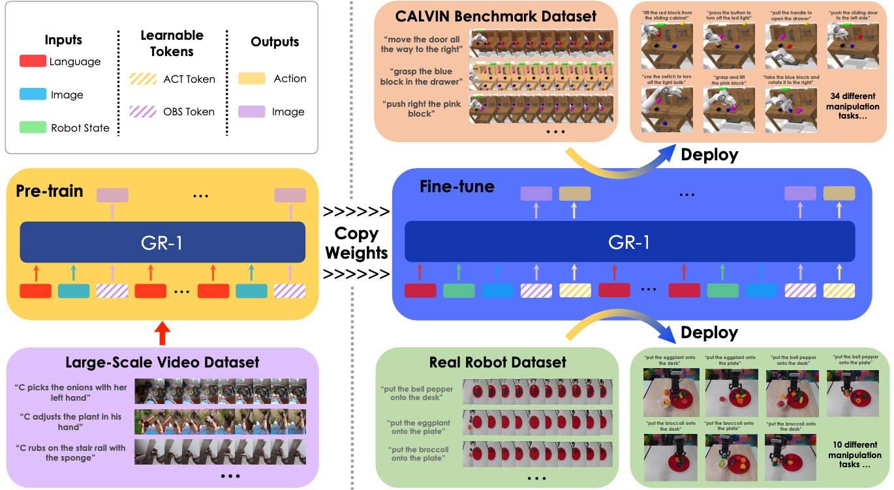
模型架构 模型由编码器、主体和解码器三部分构成。
编码器：GR-1 采用 CLIP 编码文本，MAE 作为视觉编码器；动作为 6D 姿态加 1 个二元夹爪，由 MLP 编码。
模型主体：采用因果自回归架构，视频预训练和机器人微调的 token 序列分别为
- Pretraining: \((l,\mathbf o_{t-h},\texttt{[OBS]},\ldots,l,\mathbf o_{t},\texttt{[OBS]})\)
- Finetuning: \((l,\mathbf s_{t-h},\mathbf o_{t-h},\texttt{[OBS]},\texttt{[ACT]},\ldots,l,\mathbf s_t,\mathbf o_{t},\texttt{[OBS]},\texttt{[ACT]})\)
每个 token 可以关注到其之前的除了 \(\texttt{[OBS]}\) 和 \(\texttt{[ACT]}\) 以外的所有其他 token.
解码器：视频由一个 Transformer decoder 接收 \(\texttt{[OBS]}\) 和 mask token 输出，采用 MSE 损失；动作由 MLP 解码，连续姿态采用 Smooth-L1 损失，二元夹爪采用交叉熵损失。
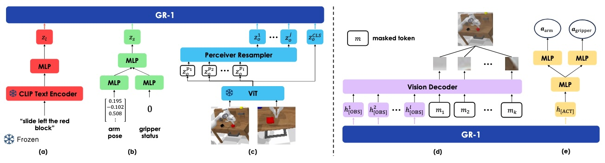
UVA
核心思想 联合学习动作和视频的表征，再用轻量扩散头分别解耦预测。通过 masked training，模型可以同时学习：1) policy; 2) video model; 3) forward dynamics; 4) inverse dynamics; 5) policy+planner.
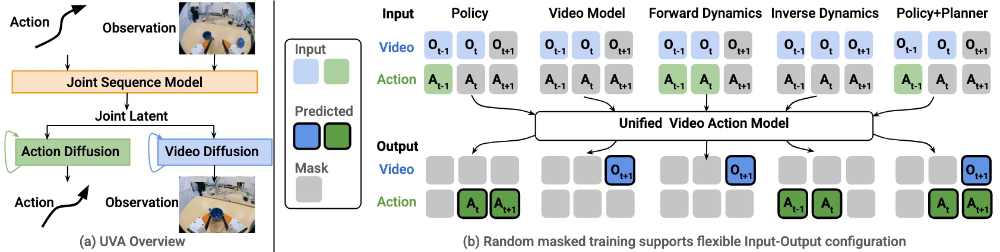
模型架构 对时刻 \(t\)，将历史观测 \(O_{t-h+1}\)、历史动作 \(A_{t-h}\) 和施加随机 mask 的未来观测 \(O_{t+1}\) 均表示为 \(N\) 个 tokens 沿 channel 维度拼接起来，最后将各时刻的拼接结果再按序列维度拼接起来，送给一个 Transformer. Transformer 输出的 latent 将分别通过 video diffusion head 和 action diffusion head 预测未来观测和未来动作。注意「随机 mask +预测未来观测」构成了一个类似 MAE 的学习方式。
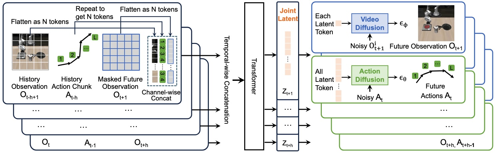
UWM
核心思想 大规模视频数据包含丰富的环境和行为，但是缺乏动作标注，因此无法用于模仿学习。为了利用上视频数据，UWM 提出视频和动作联合去噪的思路，二者的扩散时间步独立采样。于是，通过控制时间步，模型可以灵活表示：1) forward dynamics \(p(o'\vert o,a)\); 2) inverse dynamics \(p(a\vert o,o')\); 3) policy \(p(a\vert o)\); 4) video generator \(p(o'\vert o)\).
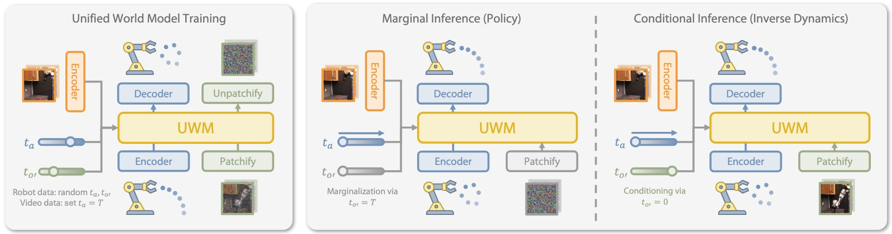
WorldVLA
核心思想 将 VLA 和 world model 结合起来，使 WorldVLA 可完成图像理解、图像生成、动作理解和动作生成任务。
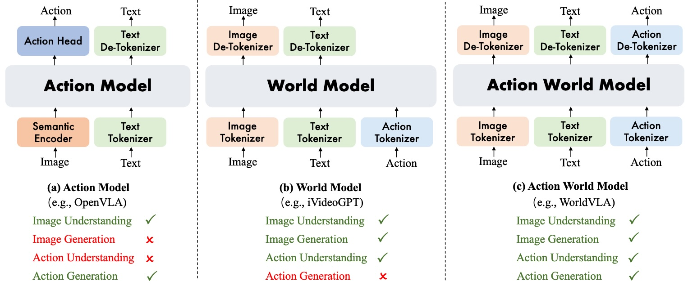
方法概览 WorldVLA 将图像、文本和动作均转化为离散 token 进行自回归建模，其 token 序列为：
- Action Modeling: \(\small\texttt{[BOS]}\texttt{\{text\}}\underbrace{\texttt{[BOI]}\texttt{\{image\}}\cdots\texttt{\{image\}}\texttt{[EOI]}}_{\times M}\texttt{[EOS]}\overbrace{\underbrace{\texttt{[BOA]}\texttt{\{action\}}\cdots\texttt{\{action\}}\texttt{[EOA]}}_{\times K}\texttt{[EOS]}}^{\mathcal L_\text{action}}\)
- World Modeling: \(\small\texttt{[BOS]}\texttt{\{text\}}\underbrace{\texttt{[BOI]}\texttt{\{image\}}\texttt{[EOI]}\texttt{[BOA]}\texttt{\{action\}}\texttt{[EOA]}\texttt{[EOS]}\overbrace{\texttt{[BOI]}\texttt{\{image\}}\texttt{[EOI]}\texttt{[EOS]}}^{\mathcal L_\text{world}}}_{\times N}\)
其中 action modeling 学习策略模型，根据文本指令和图像观测预测动作；world modeling 学习世界模型，根据文本指令、当前观测和当前动作生成下一时刻观测。
特别地，作者发现预测动作的误差累积很严重，因此为动作生成特别设计了 attention mask，使得当前动作只能看到文本和观测，不能看到之前的动作。
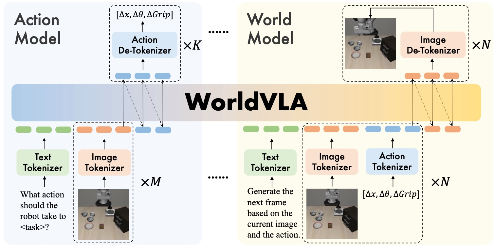
mimic-video
研究动机 由于 VLM 在静态图文上预训练，所以缺乏物理因果的知识；相反，预训练的视频生成模型既有语义、又有视觉动态知识。因此应该基于视频生成模型的表征构建具身智能模型。
模型架构 Video model 通过 flow 预测未来帧，action decoder 基于 video model 的内部表征通过 flow 预测动作。
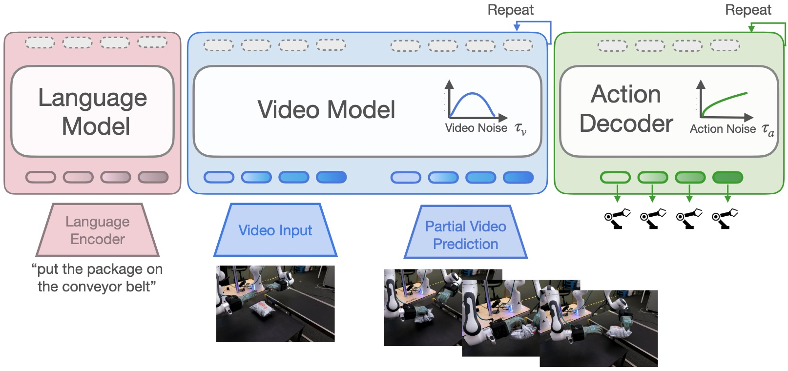
推理方式 为提高推理效率，视频帧只进行部分去噪，带噪视频的表征直接被用于预测动作。特别地，即便不对视频进行去噪，也可以达到不错的性能，实现实时推理。
训练方式 第一阶段在机器人视频上用 LoRA 微调视频生成模型，进行域适配；第二阶段从头训练 action decoder，视频和动作的扩散时间步独立采样。
Motus
核心思想 与 UVA 和 UWM 类似，Motus 也希望在一个模型中统一 5 种任务：1) VLA: \(p(a_{t+1:t+k}\vert o_t,l)\); 2) WM: \(p(o_{t+1:t+k}\vert o_t,a_{t+1:t+k})\); 3) IDM: \(p(a_{t+1:t+k}\vert o_{t:t+k})\); 4) VGM: \(p(o_{t+1:t+k}\vert o_t,l)\); 5) Video-Action Joint Prediction (WAM): \(p(o_{t+1:t+k},a_{t+1:t+k}\vert o_t,l)\). 不过 UVA 和 UWM 都是早期从头训练的工作，缺乏现代 VLA/WAM 的两个要素：VLM 或视频生成模型中的先验知识，和大规模异质数据预训练。因此，Motus 可以视为现代版的 UVA/UWM.
模型架构 Motus 采用三流 MoT 架构，视频和动作的扩散时间步独立采样。另外，考虑到视频的冗余性，视频采样率低于动作采样率。
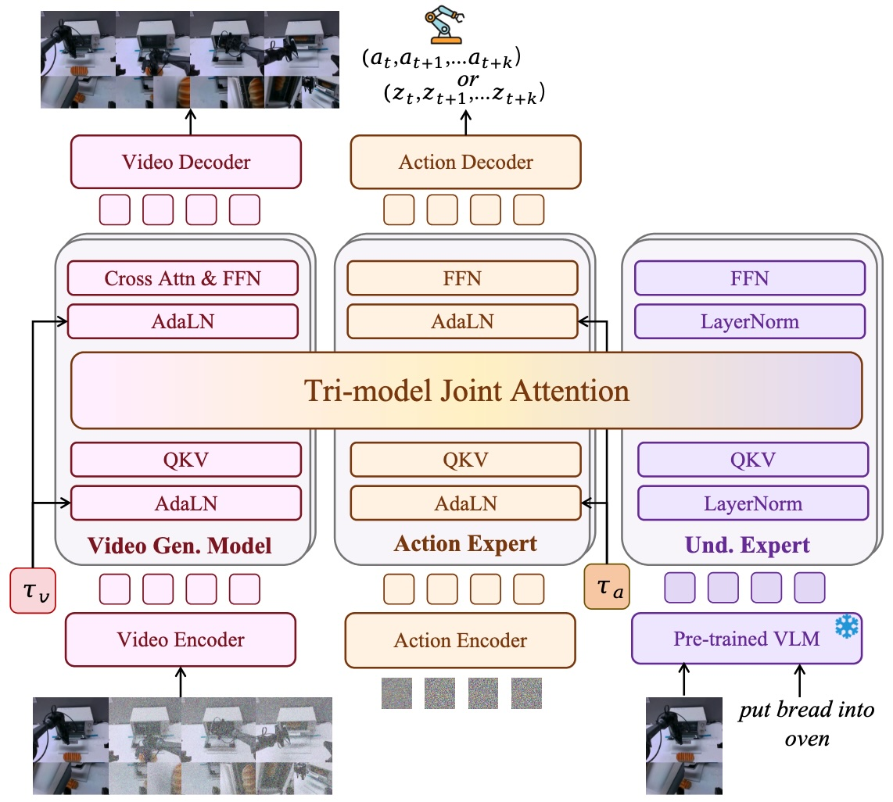
动作表示 为了利用上大规模无标注视频数据，基于光流学习了一个 autoencoder，则其 latent 可以作为任意视频的 latent action 标注。训练中 90% 的数据无动作标注，用作重构；10% 的数据有动作标注，提供弱监督。
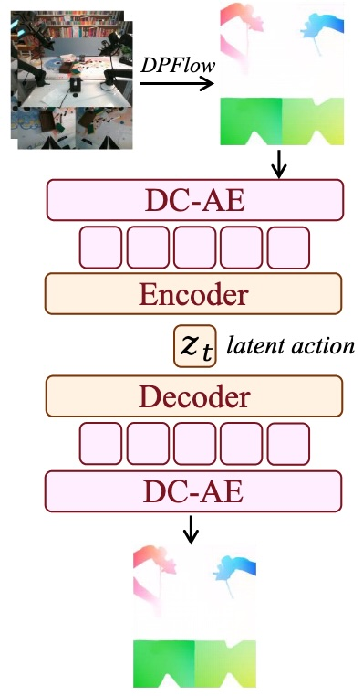
训练策略 Motus 采用三阶段训练：1）视频预训练；2）latent action 预训练；3）具身微调。
1）视频预训练。用机器人和人类操作数据微调视频生成模型。
2）latent action 预训练。加入 latent action 标注的数据训练整个模型。
3）具身微调。对特定目标机器人做微调。
Cosmos Policy
方法概述 利用 Cosmos-Predict2-2B 视频生成模型的时空先验，将其微调为机器人策略模型，输入当前观测、状态和指令，预测动作、未来状态、未来图像和价值函数。
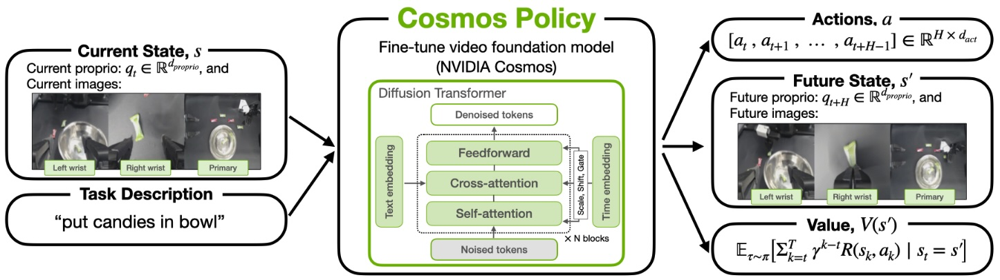
模型架构 不更改视频生成模型架构，将多视角观测、机器人状态和 action chunk 都编码为 latent frame 插入视频序列。
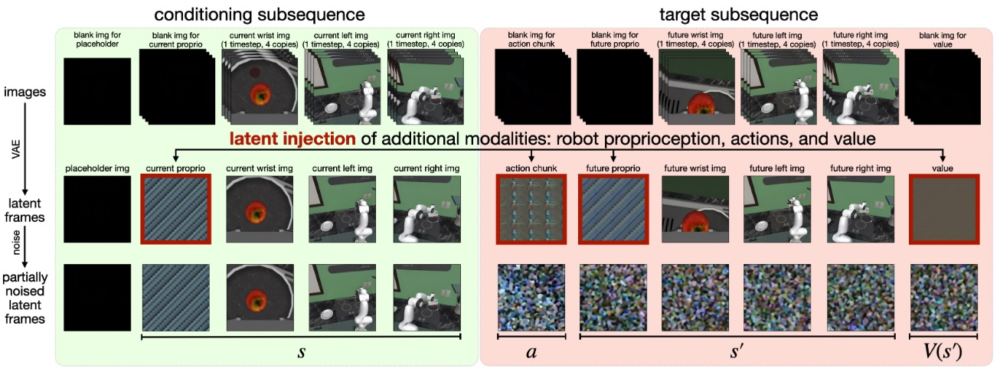
训练方法 通过更换不同的 conditioning，模型可以学习策略模型、世界模型或价值模型。具体而言，在单步训练采样的一个 batch 中，50% 的数据用于训练策略模型 \(p(a,s',V(s')\vert s)\)，25% 的数据用于训练世界模型 \(p(s',V(s')\vert s,a)\)，25% 的数据用于训练价值模型 \(p(V(s')\vert s,a,s')\).
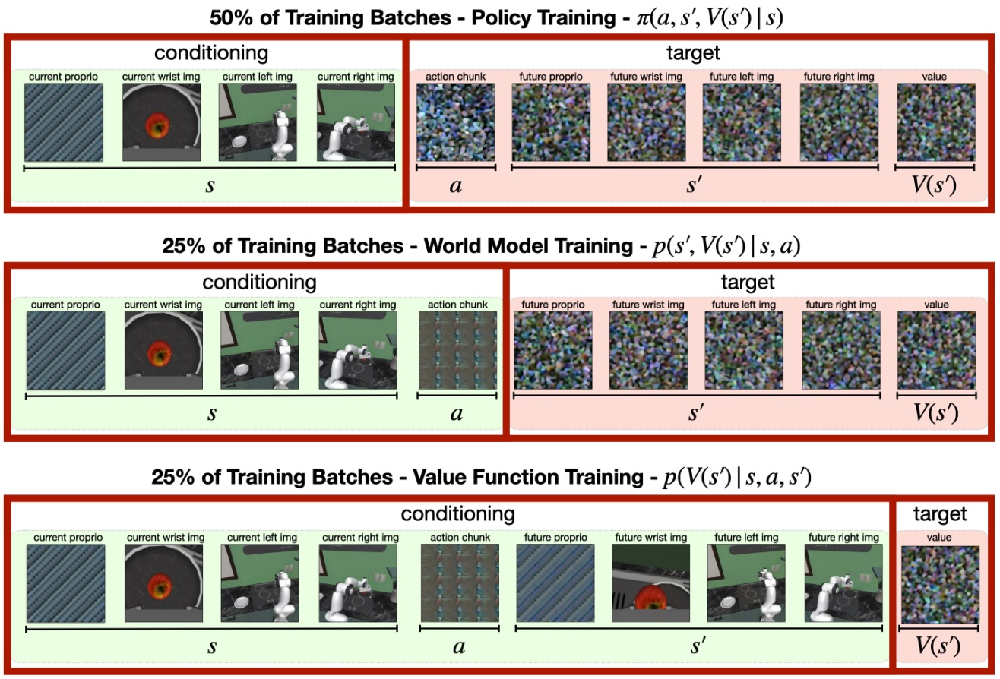
规划 (planning) 由于 Cosmos Policy 学习了世界模型和价值函数，因此部署时可以 best-of-N 选择执行价值最高的动作。具体地，作者将模型部署后收集一批 rollout 数据，在 rollout 数据上以 10%:45%:45% 的比重训练策略模型、世界模型、价值函数，则新模型用作 planning model，原模型用作 policy model. 推理时，从 policy model 中采样 \(N\) 个动作，对每种动作用 planning model 预测 3 个未来状态和 5 个价值函数，通过 majority mean 得到该动作的得分，最后选取得分最高的动作执行。
LingBot-VA
方法概览 自回归式地预测交错的 video 和 action tokens，可拆解为两步：
- Video prediction: \(z_{t+1:t+K}\sim p_\theta(\cdot\vert z_{\leq t},a_{<t})\)
- Inverse dynamics: \(a_{t:t+K-1}\sim g_\psi(\cdot\vert \hat z_{t+1:t+K},z_{\leq t},a_{<t})\)
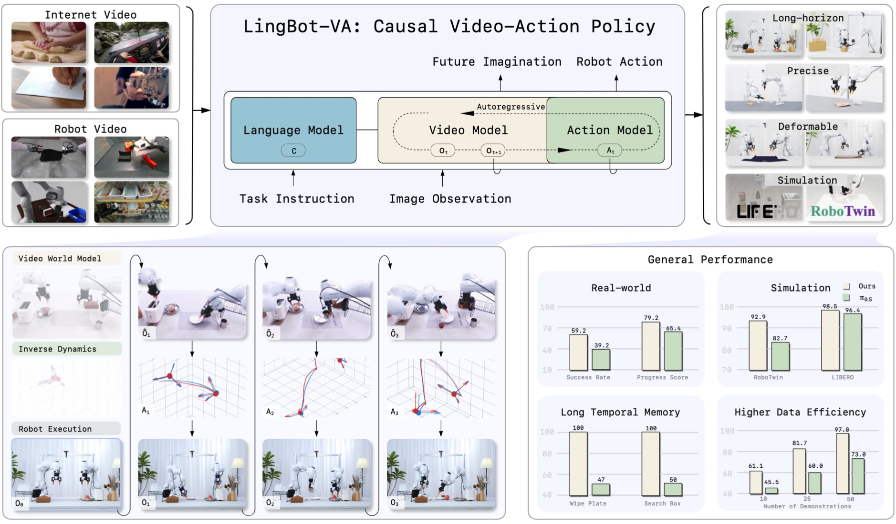
模型架构
- 视频稀疏化：帧数下采样 4 倍，每个视频帧对应 4 个动作，形成序列 \((z_t,a_{t,1},a_{t,2},a_{t,3},a_{t,4},z_{t+1},\cdots)\).
- 双流 MoT：video stream 由 Wan2.2-5B 初始化，action stream 相同深度，但是宽度更小 \(d_a\ll d_v\).
- 初始化：action stream 使用 video stream 权重插值初始化。
- 可变 chunk size：训练时取 \(K\in[1,8]\)，推理时取 \(K=4\).
训练方式
- Teacher-forcing：causal attention mask 如下图所示。
- 历史噪声增强：训练时让历史以 0.5 的概率带噪，使得推理时无需将 video 全部去噪，提高推理效率。
- 训练目标：flow matching.
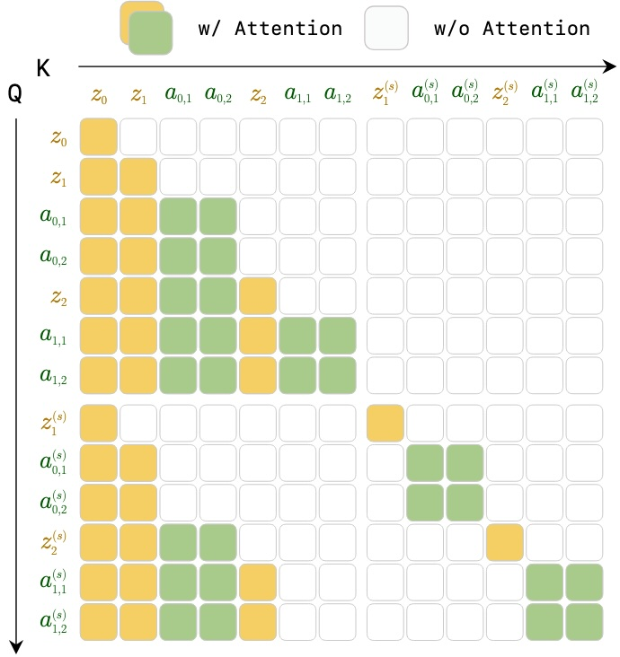
推理方式
- Video token 只做 3 步欧拉采样，去噪到 \(s=0.6\)；action token 做 10 步欧拉采样完全去噪。
- 自回归推理支持 KV-cache.
- 异步并行执行：机器人在执行 \(a_t\) 时，模型基于真实观测 \(z_t\) 和上一步生成的观测 \(\hat z_{t+1}\) 去预测 \(\hat z_{t+2}\) 和 \(a_{t+1}\).
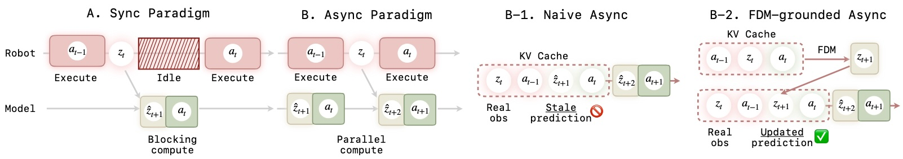
DreamZero
核心思想 DreamZero 的作者认为，尽管 VLA 可以泛化到新的文本指令和新的操作物体上，但是难以泛化到新环境和新动作上；而 WAM 基于的视频生成模型有非常多不同动作的先验，因此可以对新环境和新动作有更好的泛化性。DreamZero 的核心贡献/发现包括以下三个方面：
- 数据：多样、异构数据比重复数据更重要；
- 泛化性：WAM 可在新环境新任务上实现 zero-shot 泛化，也可以高效微调到新任务上；
- 跨本体迁移：DreamZero 可将其他机器人或人类的操作视频（无动作标注）迁移到当前机器人上。
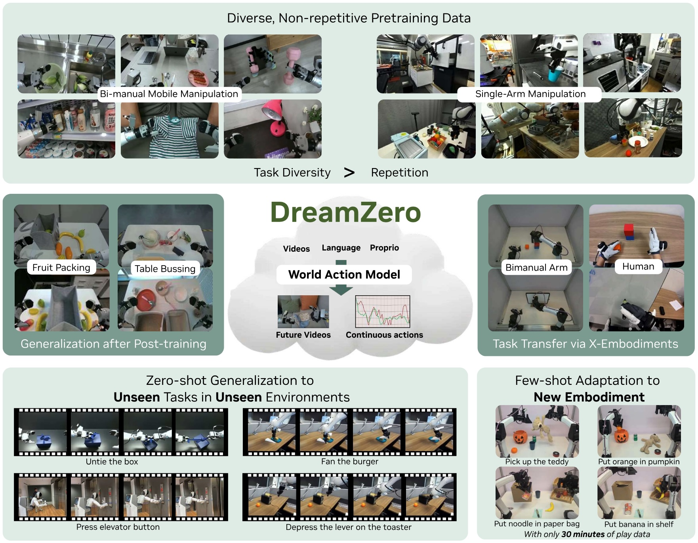
问题描述 WAM 联合预测视频和动作，本质上可分解为视频生成模型和逆动力学模型： \[ \underbrace{\pi_\theta(o_{t:t+H},a_{t:t+H}\vert o_{0:t},c,q_t)}_\text{WAM}=\underbrace{\pi_\theta(o_{t:t+H}\vert o_{0:t},c,q_t)}_\text{Video Model}\underbrace{\pi_\theta(a_{t:t+H}\vert o_{0:t+H},q_t)}_\text{IDM} \] WAM 通过联合预测将视频生成模型和逆动力学模型整合成了一个端到端模型。
模型架构 DreamZero 基于 Wan2.1-I2V-14B-480P 构建，视频和动作均以 flow matching 的方式学习，采用 teacher-forcing chunk-wise AR 的方式训练，通过 attention mask 使得当前带噪 chunk 只能看到历史干净 chunks.
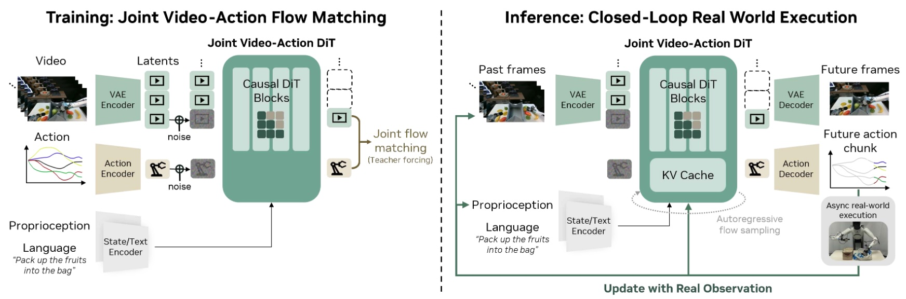
World Guidance
核心思想 考虑到视频包含很多与动作无关的冗余信息，因此现有 WAM 的联合预测未来视频和动作的范式并不本质。WoG 希望从未来视频中提取一个紧凑又包含未来动作信息的低维表征，用于指导动作生成。为了让提取的表征只关注对动作生成有帮助的信息，WoG 将其作为条件纳入机器人动作的训练中，让模型自己去学习这样的表征；随后冻结提取该表征的编码器，模型联合预测未来动作和表征即可。
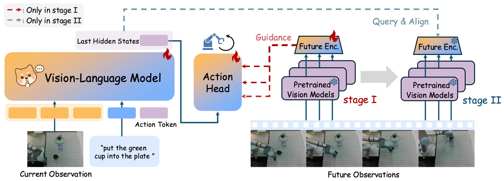
训练细节
- 模型架构：WoG 以 Prismatic VLM 为 backbone，视觉编码器为 DINOv2 + Wan VAE，表征通过 Q-Former 提取。
- 阶段一：提取的表征通过 cross attention 注入 action head，对动作按照 flow matching 训练。
- 阶段二：冻结表征提取器，让 VLM 联合预测动作和表征，其中动作采用 flow matching，表征采用 cosine similarity.
数据利用 WoG 可以利用有标注视频和无标注的人类操作视频。对后者，WoG 只在阶段二训练其表征预测部分。
Fast-WAM
核心思想 已有 WAM 在训练和推理时均预测未来视频。Fast-WAM 认为，视频预测的主要作用是在训练时优化模型的内部表征，在推理时完全可以舍弃而不过分损失性能，从而加快推理速度。
框架对比 图 (A) 为联合预测视频和动作；图 (B) 为先预测视频，再预测动作；图 (C) 为本文方法，先预测动作，再预测视频，从而推理时可以跳过视频预测步骤。
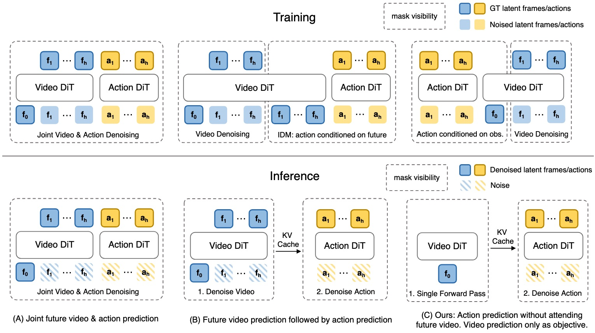
模型架构 Fast-WAM 采用 MoT 架构，下图 attention mask 表明 video 和 action branch 除了都能关注到第一个干净帧以外，未来 video 和未来 action 各自内部双向注意但不能互相关注。所有 token 均通过 cross-attention 关注文本指令。
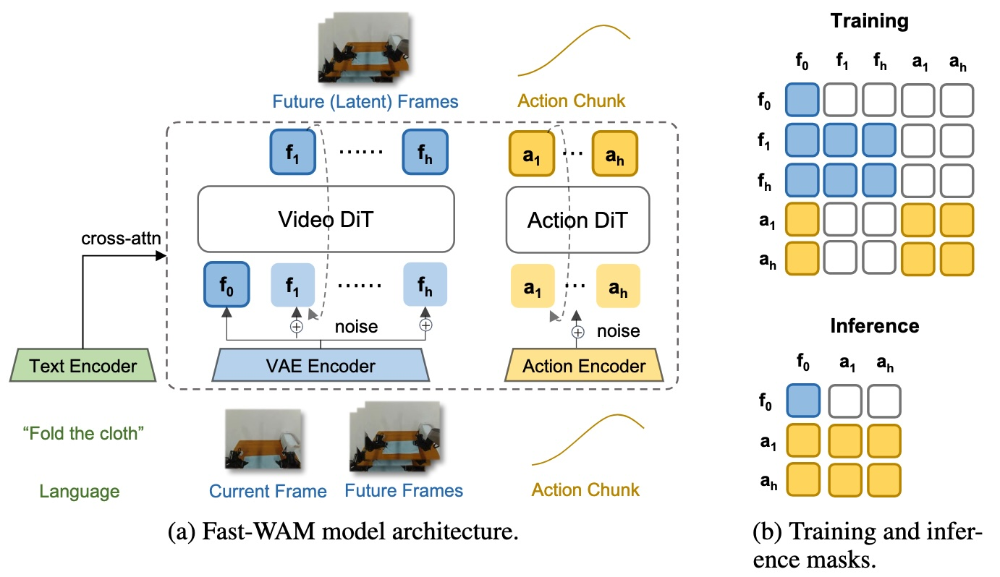
Being-H0.7
LingBot-VA 2.0
核心改进 在 LingBot-VA 的基础上有 4 点改进：
- 引入 semantic visual-action tokenizer，而非采用 VAE
- 从头进行因果预训练，避免适配双向模型时产生灾难性遗忘
- 引入 sparse MOE 架构
- 增强异步推理机制
References
- Moritz Reuss. Pretrained to Imagine, Fine-Tuned to Act: The Rise of World-Action Models. https://developer.nvidia.com/blog/pretrained-to-imagine-fine-tuned-to-act-the-rise-of-world-action-models/ ↩︎
- Wang et.al. World Action Models: The Next Frontier in Embodied AI. https://openmoss.ai/Awesome-WAM/ ↩︎